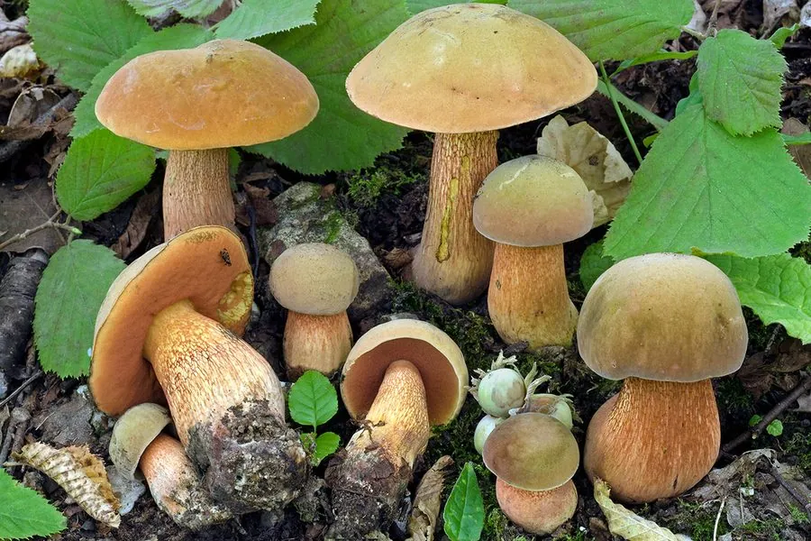

真菌 · 真菌界
红网牛肝菌 Suillellus luridus

红网牛肝菌的菌盖橄榄褐色、菌管口橙红色、菌柄有红色网纹，伤后变蓝，生食有毒，必须充分加热且不宜与酒同食。
- 分类
- 门担子菌门纲伞菌纲目牛肝菌目科牛肝菌科属红网牛肝菌属
- 栖息环境
- 阔叶林与混交林地面，与栎、山毛榉等形成外生菌根
- 地理分布
- 欧洲、北非与东亚，中国西南和华北林区有分布
- 保护级别
- 暂无评估（IUCN 未评估，中国未列入重点保护名录）
物种志
红网牛肝菌是担子菌门牛肝菌科的真菌，子实体单生或群生。菌盖半球形至平展，直径 5–15 cm，表面橄榄褐色、暗褐色至灰褐色，干燥时略呈绒状；菌肉淡黄色，切开后迅速变为蓝色。菌盖下面为菌管，管口橙红色至朱红色，伤后变蓝。菌柄粗壮，黄色至橙红色，表面有明显的红色网状纹路，基部常带红色；孢子印橄榄褐色。
红网牛肝菌与栎、山毛榉等阔叶树形成外生菌根，生于阔叶林和混交林的地面，夏秋季出菇，在欧洲、北非和东亚分布，中国西南和华北林区有记录。它含有溶血素和类似鬼伞素的成分，生食有毒，与酒精同食可引起中毒反应；充分加热后毒素可被破坏，因此在云南等地有煮熟食用的习惯，但仍需谨慎。菌柄上的红色网纹、红色的菌管口和伤后变蓝，是辨识它的三个关键特征。
形态与习性
- 菌盖直径 5–15 cm，橄榄褐至暗褐色
- 菌管口橙红色至朱红色，伤后变蓝
- 菌柄黄色，有明显的红色网纹
- 变色菌肉切开后迅速变蓝
- 孢子印橄榄褐色
- 毒性生食有毒，不宜与酒同食
- 食用性须充分加热，仍应谨慎
趣味知识
- 红网牛肝菌生食有毒，和酒一起吃更容易中毒。
- 它的菌管口是橙红色的，菌柄上有红色网纹，很好辨认。
- 切开后菌肉迅速变蓝，是牛肝菌类常见的变色反应。
- 充分加热能破坏部分毒素，但采食仍要谨慎。